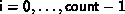

MPI_OP_CREATE( function, commute, op)
[ IN function] user defined function (function)
[ IN commute] true if commutative; false otherwise.
[ OUT op] operation (handle)
int MPI_Op_create(MPI_User_function *function, int commute, MPI_Op *op)
MPI_OP_CREATE( FUNCTION, COMMUTE, OP, IERROR)
EXTERNAL FUNCTION
LOGICAL COMMUTE
INTEGER OP, IERROR
MPI_OP_CREATE binds a user-defined global operation
to an op handle that can subsequently be used in
MPI_REDUCE, MPI_ALLREDUCE,
MPI_REDUCE_SCATTER, and
MPI_SCAN.
The user-defined operation is assumed to be associative.
If commute = true, then the operation should be both
commutative and associative. If commute = false,
then the order of operands is fixed and is defined to be in ascending, process
rank order, beginning with process zero. The order of evaluation can be
changed, talking advantage of the associativity of the operation. If
commute = true then the order of evaluation can be changed,
taking advantage of commutativity and associativity.
function is the user-defined function, which must have the following four arguments: invec, inoutvec, len and datatype.
The ANSI-C prototype for the function is the following.
typedef void MPI_User_function( void *invec, void *inoutvec, int *len,
MPI_Datatype *datatype);
The Fortran declaration of the user-defined function appears below.
FUNCTION USER_FUNCTION( INVEC(*), INOUTVEC(*), LEN, TYPE) <type> INVEC(LEN), INOUTVEC(LEN) INTEGER LEN, TYPEThe datatype argument is a handle to the data type that was passed into the call to MPI_REDUCE. The user reduce function should be written such that the following holds: Let u[0], ... , u[len-1] be the len elements in the communication buffer described by the arguments invec, len and datatype when the function is invoked; let v[0], ... , v[len-1] be len elements in the communication buffer described by the arguments inoutvec, len and datatype when the function is invoked; let w[0], ... , w[len-1] be len elements in the communication buffer described by the arguments inoutvec, len and datatype when the function returns; then w[i] = u[i]
 v[i], for i=0 , ... , len-1,
where
v[i], for i=0 , ... , len-1,
where  is the reduce operation that the function computes.
is the reduce operation that the function computes.
Informally, we can think of invec and inoutvec as arrays of len elements that function is combining. The result of the reduction over-writes values in inoutvec, hence the name. Each invocation of the function results in the pointwise evaluation of the reduce operator on len elements: I.e, the function returns in inoutvec[i] the value , for  , where is the combining operation computed by the function.
[] Rationale.
The len argument allows MPI_REDUCE to avoid calling the function for each element in the input buffer. Rather, the system can choose to apply the function to chunks of input. In C, it is passed in as a reference for reasons of compatibility with Fortran.
By internally comparing the value of the datatype argument to
known, global handles,
it is possible to overload the use of a single user-defined function
for several, different data types.
( End of rationale.)
General datatypes may be passed to the user function.
However, use of datatypes that are not contiguous is likely to lead to
inefficiencies.
No MPI communication function may be called inside the user function. MPI_ABORT may be called inside the function in case of an error.
[] Advice to users.
Suppose one defines a library of user-defined reduce functions that are overloaded: the datatype argument is used to select the right execution path at each invocation, according to the types of the operands. The user-defined reduce function cannot ``decode'' the datatype argument that it is passed, and cannot identify, by itself, the correspondence between the datatype handles and the datatype they represent. This correspondence was established when the datatypes were created. Before the library is used, a library initialization preamble must be executed. This preamble code will define the datatypes that are used by the library, and store handles to these datatypes in global, static variables that are shared by the user code and the library code.
The Fortran version of MPI_REDUCE will invoke a user-defined reduce
function using the Fortran calling conventions and will pass a Fortran-type
datatype argument; the C version will use C calling convention and the C
representation of a datatype handle. Users who plan to mix languages should
define their reduction functions accordingly.
( End of advice to users.)
[] Advice
to implementors.
We outline below a naive and inefficient implementation of MPI_REDUCE.
if (rank > 0) {
RECV(tempbuf, count, datatype, rank-1,...)
User_reduce( tempbuf, sendbuf, count, datatype)
}
if (rank < groupsize-1) {
SEND( sendbuf, count, datatype, rank+1, ...)
}
/* answer now resides in process groupsize-1 ... now send to root
*/
if (rank == groupsize-1) {
SEND( sendbuf, count, datatype, root, ...)
}
if (rank == root) {
RECV(recvbuf, count, datatype, groupsize-1,...)
}
The reduction computation proceeds, sequentially, from process 0
to process group-size-1. Thisorder is chosen so as to respect
the order of a possibly non-commutative operator defined by the
function User_reduce().
A more efficient implementation is achieved by taking advantage
of associativity and
using a logarithmic tree reduction. Commutativity can be used
to advantage, for those cases in which the commute argument
to MPI_OP_CREATE is true. Also, the amount of temporary buffer
required can be reduced, and communication can be pipelined with
computation, by transferring and reducing the elements in chunks of
size len < count.
The predefined reduce operations can be implemented as a library of
user-defined operations. However, better performance might be
achieved if MPI_REDUCE handles these functions as a special
case.
( End of advice to implementors.)
MPI_OP_FREE( op)
[ IN op] operation (handle)
int MPI_op_free( MPI_Op *op)
MPI_OP_FREE( OP, IERROR)
INTEGER OP, IERROR
Marks a user-defined reduction operation for deallocation and sets op to MPI_OP_NULL.
It is time for an example of user-defined reduction.
Example
Compute the product of an array of complex numbers, in C.
typedef struct {
double real,imag;
} Complex;
/* the user-defined function
*/
void myProd( Complex *in, Complex *inout, int *len, MPI_Datatype *dptr )
{
int i;
Complex c;
for (i=0; i< *len; ++i) {
c.real = inout->real*in->real -
inout->imag*in->imag;
c.imag = inout->real*in->imag +
inout->imag*in->real;
*inout = c;
in++; inout++;
}
}
/* and, to call it...
*/
...
/* each process has an array of 100 Complexes
*/
Complex a[100], answer[100];
MPI_Op myOp;
MPI_Datatype ctype;
/* explain to MPI how type Complex is defined
*/
MPI_Type_contiguous( 2, MPI_DOUBLE, &ctype );
MPI_Type_commit( &ctype );
/* create the complex-product user-op
*/
MPI_Op_create( myProd, True, &myOp );
MPI_Reduce( a, answer, 100, ctype, myOp, root, comm );
/* At this point, the answer, which consists of 100 Complexes,
* resides on process root
*/